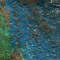
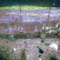
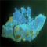
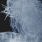
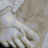
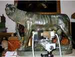

diagnostica e tecnologie per i beni culturali
Ars Mensurae, founded in 2001, has been working for years in the field of diagnostic investigations applied to
cultural heritage. Its strength lies in a multidisciplinary team of professionals – spanning diagnostics, restoration,
technology, physics, chemistry, art history, and anti-counterfeiting – who combine their expertise to offer a deeper
and more integrated understanding of heritage objects.
Always focused on the real needs of those working in the cultural heritage sector, Ars Mensurae dedicates its
efforts to the research and development of cutting-edge technologies for the study of artworks from two main
angles: an archaeometric perspective, aimed at identifying materials and production techniques, and a diagnostic
approach, to assess conservation conditions and degradation processes.
Investigations rely mostly on portable, non-invasive tools that ensure the highest respect for the integrity of the artworks and the safety of operators.
Thanks to its long-standing experience, Ars Mensurae is able to carry out diagnostic campaigns that are logistically swift, efficient in data collection
and reporting, responsive in providing results, and highly adaptable to complex working environments – whether in demanding restoration sites,
museums, or even private homes. The interpretation of the data is always in-depth and enriched by the synergy of the team’s diverse skillsets, while
keeping costs accessible and tailored to different client needs.
The Ars Mensurae team includes:
– Prof. Stefano Ridolfi, Technical Director
– Dr. Ilaria Carocci, Head of Conservation and Diagnostics
– Dr. Susanna Crescenzi, Head of Technology and Microclimate Studies
– Dr. Giulia Ristori, Head of Art History and Anti-Counterfeiting Research






Laboratorio: via G. Aretusi 29 - 00188, Roma - cell. 3281925391 - P.IVA 07066721007